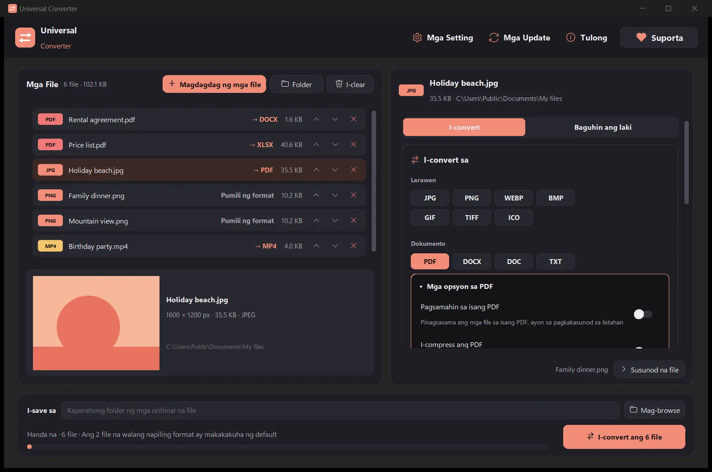
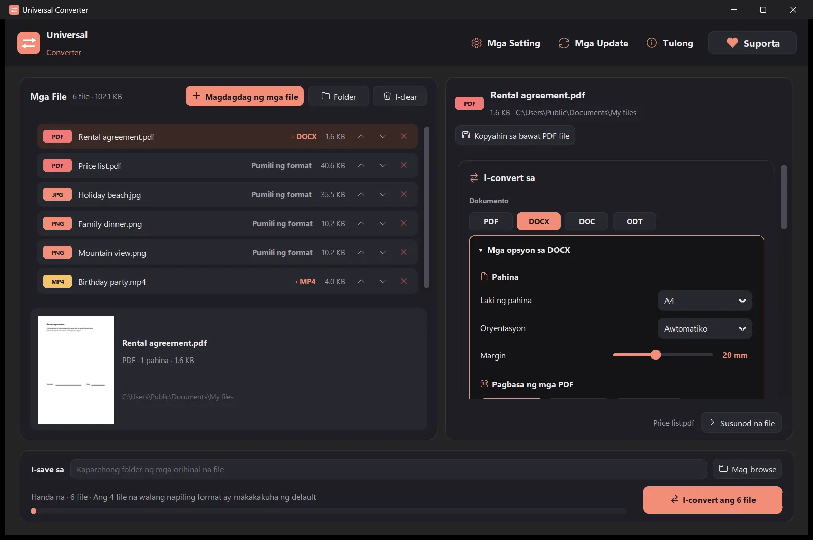
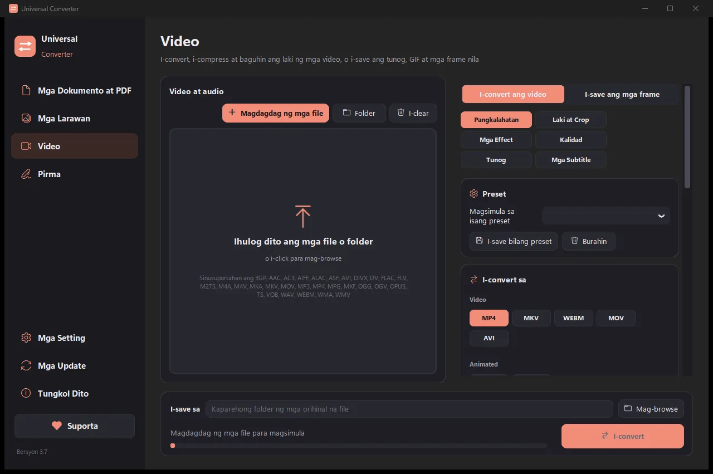
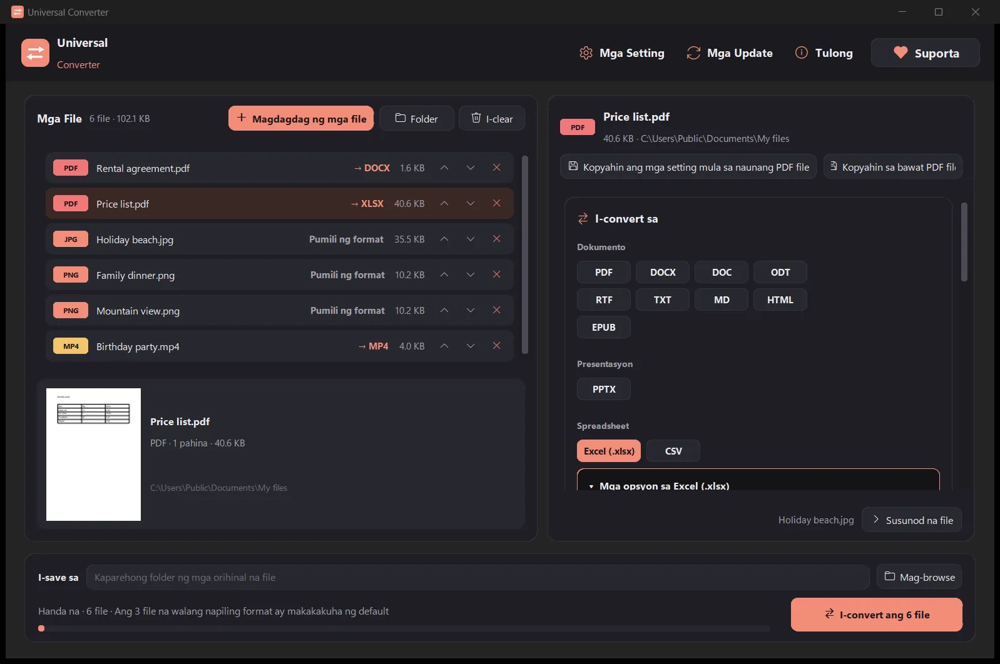
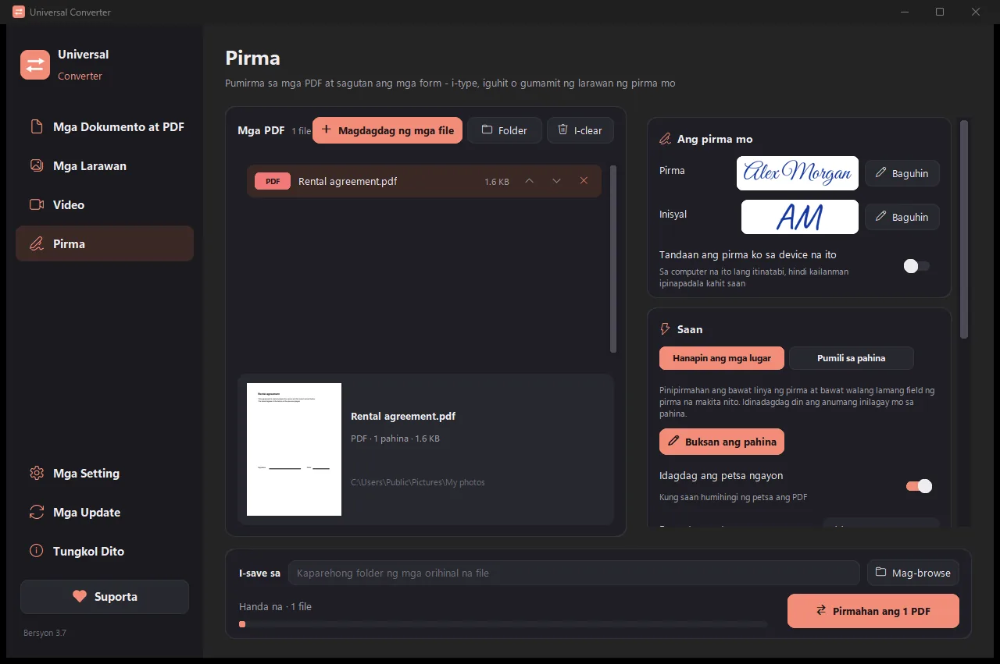
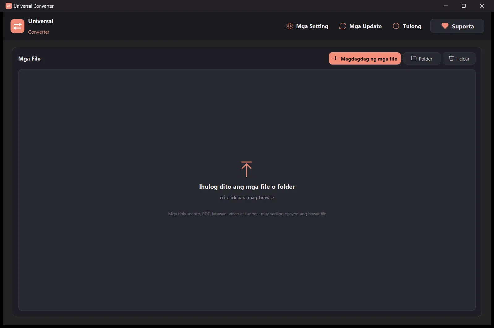

I-convert ang mga file mo sa sarili mong device
Mga larawan, dokumento, video at audio, PDF at mga table papuntang Excel, lahat sa iisang app. Walang ina-upload: hindi kailanman umaalis sa device mo ang mga file mo.
Paano mag-install at mag-update
- Buksan ang na-download na .dmg at i-drag ang Universal Converter sa Applications.
- Buksan ang app. Sa unang beses, ibo-block ito ng macOS dahil hindi ito pinirmahan ng Apple: i-click ang Done.
- Buksan ang System Settings > Privacy & Security, mag-scroll pababa, i-click ang Open Anyway at ilagay ang password mo. Isang beses mo lang ito gagawin.
Mga update: kung papayagan mo sa unang pagbukas ng app, titingin ito ng mga bagong bersyon tuwing magsisimula, ive-verify ang digital signature nila at ii-install ang mga ito kapag pinili mo.
Paano mag-install at mag-update
- I-tap ang I-download para sa Android sa telepono mo.
- Buksan ang na-download na file. Kung magtanong ang Android, payagan ang browser o file manager mo na mag-install ng mga app.
- I-tap ang I-install.
Mga update: kapag binuksan mo ang app, titingnan nito kung may bagong bersyon at sasabihin sa iyo kapag handa na ito. I-download ito sa parehong paraan at i-install sa ibabaw ng luma; mananatili ang mga setting mo.
Paano mag-install at mag-update
- I-download ang .AppImage file.
- Gawin itong executable: i-right-click, buksan ang Properties > Permissions at payagang patakbuhin bilang program (o sa terminal: chmod +x Universal-Converter-*.AppImage).
- I-double-click ito. Walang ini-install: ang app ay ang iisang file na ito.
Mga update: kung papayagan mo sa unang pagbukas ng app, titingin ito ng bagong bersyon tuwing magsisimula, ive-verify ang digital signature nito at papalitan ang AppImage file kung nasaan ito.

Pribado
Tumatakbo ang lahat sa device mo. Walang upload, walang pila, walang limitasyon sa laki.
Libre
Libreng gamitin, walang ad, walang account at walang watermark.
34 na wika
English, Greek, Spanish, Italian, German, French, Portuguese (Portugal at Brazil), Polish, Russian, Arabic, Hebrew, Chinese, Japanese, Korean, Tamil, Afrikaans, Yoruba, Hausa, Hindi, Indonesian, Turkish, Vietnamese, Swedish, Dutch, Danish, Ukrainian, Czech, Romanian, Bulgarian, Norwegian, Malay, Filipino at Swahili.
Limang tool sa iisang window

Mga Dokumento at PDF
Mag-convert sa pagitan ng PDF, Word, ODT, RTF, TXT, Markdown, HTML, EPUB, PowerPoint at Excel. Gawing larawan ang mga pahina at pagsamahin ang ilang file sa isang PDF. Napapanatili ang mga font, laki at kulay. Paliitin ang mga PDF sa laking pipiliin mo. Nagiging tekstong mae-edit at mga table ang mga scan at nasagutang form, nakaayos tulad ng pahina. Pumapasok sa Word bilang tunay na mga table ang mga table, kahit walang linya gaya ng sa bank statement, at nabubuksan ang mga lumang file ng Word (.doc) at PowerPoint (.ppt).
Mga Larawan
Mag-convert sa pagitan ng JPG, PNG, WEBP, TIFF, BMP, GIF at ICO. Baguhin ang laki ayon sa pixel, porsyento o laki ng file, pagsamahin ang mga larawan sa isang PDF o Word file, at basahin ang teksto sa mga larawan (OCR). Puwede ring magdagdag ng mga PDF: nagiging larawan ang bawat pahina.

Video
Mag-convert ng mga video sa pagitan ng MP4, MKV, WebM, MOV at AVI, at i-compress ang mga ito gamit ang AV1, H.265, H.264 o VP9. Mag-trim, mag-crop, mag-ikot at magbago ng laki, gumawa ng GIF, mag-save ng mga frame bilang larawan, o itabi lang ang tunog bilang MP3, M4A, AAC, FLAC, WAV, AIFF, OGG, AC-3, MP2, WavPack, MKA, CAF o Opus. Kapag maraming video, puwedeng may sariling setting ang bawat isa. Sa Android: MP4, MKV, WebM, MOV o GIF, o ang tunog bilang MP3, M4A, AAC, OGG, Opus, FLAC, WAV, AIFF o MKA; mag-trim, mag-crop, mag-ikot, magbago ng laki at mag-save ng mga frame.

Excel
Kunin ang mga table mula sa mga PDF, scan at larawan papunta sa Excel o CSV: mga bank statement, invoice, listahan ng presyo. Nababasa ang Greek, English, Spanish at mahigit 30 iba pang wika.

Pirma
Pumirma sa mga PDF at sagutan ang mga form. I-type ang pangalan mo sa istilong sulat-kamay, iguhit ang pirma mo o gumamit ng larawan nito. Bumubukas ang bawat PDF na may marka na ang mga linya ng pirma na nahanap ng app: i-click o i-tap ang mga ito, o kung saan ilalagay ang pirma, inisyal, petsa, teksto o tsek. Pumirma sa maraming file nang sabay-sabay; hindi nagagalaw ang mga orihinal.
- Ginagamit ang graphics card mo para sa video kapag kaya: karaniwang 5 hanggang 20 beses na mas mabilis.
- I-drag papasok ang buong folder: sabay-sabay na kino-convert ang bawat file.
- Isang screen para sa lahat ng file: idagdag nang sabay ang mga dokumento, larawan at video, at may sariling mga opsyon ang bawat isa.
- Ipinapaalam sa iyo ang mga bagong bersyon; sa Windows, Mac at Linux, kaya nitong i-install ang mga ito para sa iyo, na digital na bine-verify.
- Maliwanag at madilim na hitsura, tugma sa device mo.
Paano ito gumagana
- Buksan ang Universal Converter.
- I-drag ang mga file mo o isang buong folder sa window, o i-click ang Magdagdag ng mga file.
- I-click ang I-convert. Sine-save ang mga bagong file katabi ng mga orihinal, o sa folder na pipiliin mo.

Kaya nitong gawin
- I-convert ang PDF sa Word
- I-convert sa PDF ang mga Word document
- Pagsamahin ang ilang file sa iisang PDF
- I-compress ang isang PDF sa laking pipiliin mo
- I-compress ang isang PDF sa 100 KB, 200 KB o anumang laki para sa mga online form
- I-convert ang mga pahina ng PDF sa mga JPG na larawan
- Gawing mae-edit na Word file ang isang na-scan na dokumento
- Mag-convert ng mga larawan sa pagitan ng JPG, PNG, WEBP at iba pa
- Baguhin ang laki ng mga larawan o paliitin ang mga ito sa isang laki ng file
- Baguhin ang laki ng larawan o pirma sa 20 KB, 50 KB o eksaktong pixel
- Pagsamahin ang mga larawan sa iisang PDF
- JPG papuntang PDF na mas mababa sa 100 KB
- Kopyahin ang teksto mula sa isang larawan (OCR)
- I-compress ang isang video nang hindi ito ina-upload
- Mag-convert ng mga video sa pagitan ng MP4, MKV, WebM, MOV at AVI
- I-save ang tunog ng isang video bilang MP3
- Gumawa ng GIF mula sa isang video
- Ilipat sa Excel ang mga table mula sa isang PDF
- I-convert sa Excel ang isang bank statement na PDF
- Kunin sa Excel ang mga table mula sa mga PDF na invoice
- Pumirma sa isang PDF
- Sagutan ang isang PDF form
Mga tanong
Libre ba talaga ito?
Oo. Libreng gamitin ang Universal Converter, walang ad, walang account at walang limitasyon sa oras. Kung nakakatulong ito sa iyo, puwede mong suportahan ang pag-develop nito sa kusang-loob na kontribusyon, pero hindi mo kailanman kailangang gawin iyon.
Ina-upload ba kahit saan ang mga file ko?
Hindi. Nangyayari ang bawat conversion sa sarili mong device, kaya gumagana rin ito nang walang koneksyon sa internet. Nag-o-online lang ang app para tumingin ng mga update, para i-download ang mga alpabeto ng pagkilala ng teksto na pipiliin mo at, kung papayagan mo, para magpadala ng mga hindi nagpapakilalang ulat ng error.
Ligtas bang i-download ito?
Oo. Bago ilagay sa pahinang ito, ini-scan ng mga 60–70 antivirus engine sa VirusTotal ang mga download para sa Windows, Mac, Linux at Android ng bawat bersyon; binubuksan ng link sa ilalim ng bawat download button ang ulat ng file na iyon. Walang ipinapakitang ad ang app at walang kinokolektang personal na data, at sinusuri at pinipirmahan din ng Microsoft ang bersyon sa Microsoft Store.
May babalang SmartScreen ang Windows. Normal ba iyon?
Oo. Wala pang code signature ang installer, kaya hindi ito kilala ng Windows. Piliin ang "More info", saka ang "Run anyway". Ang mga update pagkatapos noon ay digital na bine-verify ng app mismo. O i-install ito mula sa Microsoft Store, na walang ipinapakitang babala.
Paano ko ito bubuksan sa Mac?
Buksan ang na-download na file at i-drag ang Universal Converter sa Applications. Hindi pinirmahan ng Apple ang app, kaya sa unang pagbukas mo nito ay ibo-block ito ng macOS: i-click ang Done, saka buksan ang System Settings > Privacy & Security, i-click ang "Open Anyway" at ilagay ang password mo. Isang beses mo lang ito gagawin.
Paano ko ito ii-install sa Android?
I-download ang APK sa telepono mo, buksan ito at payagan ang pag-install kapag tinanong (Android 10 o mas bago). Kasama na sa app ang lahat ng 34 na wika; pumili ng isa sa Mga Setting ng app. Sasabihin sa iyo ng app kapag may bagong bersyon.
Anong mga wika ang gamit nito?
Available ang app sa English, Greek, Spanish, Italian, German, French, Portuguese (Portugal at Brazil), Polish, Russian, Arabic, Hebrew, Chinese, Japanese, Korean, Tamil, Afrikaans, Yoruba, Hausa, Hindi, Indonesian, Turkish, Vietnamese, Swedish, Dutch, Danish, Ukrainian, Czech, Romanian, Bulgarian, Norwegian, Malay, Filipino at Swahili. Pipili ka sa installer, o mamaya sa Mga Setting.